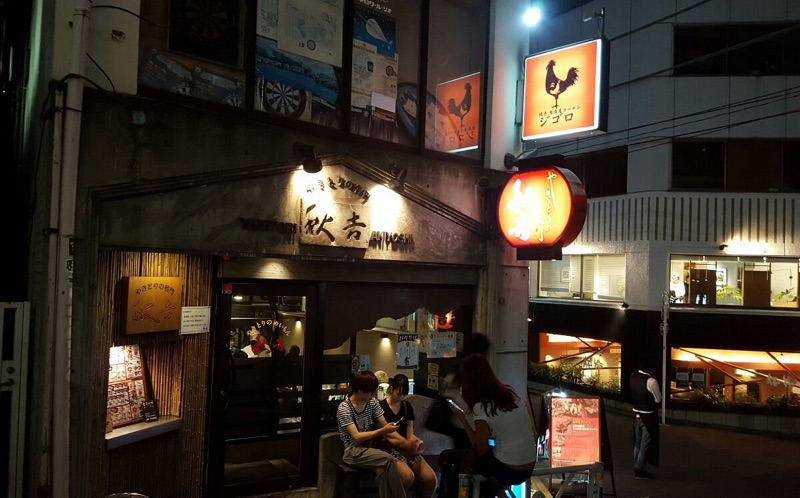
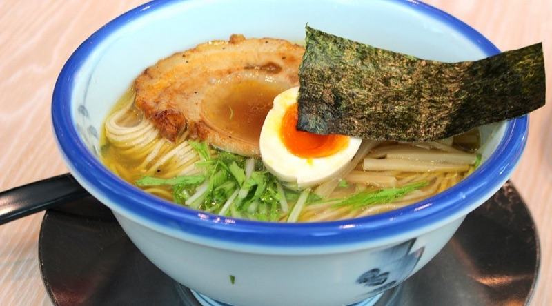
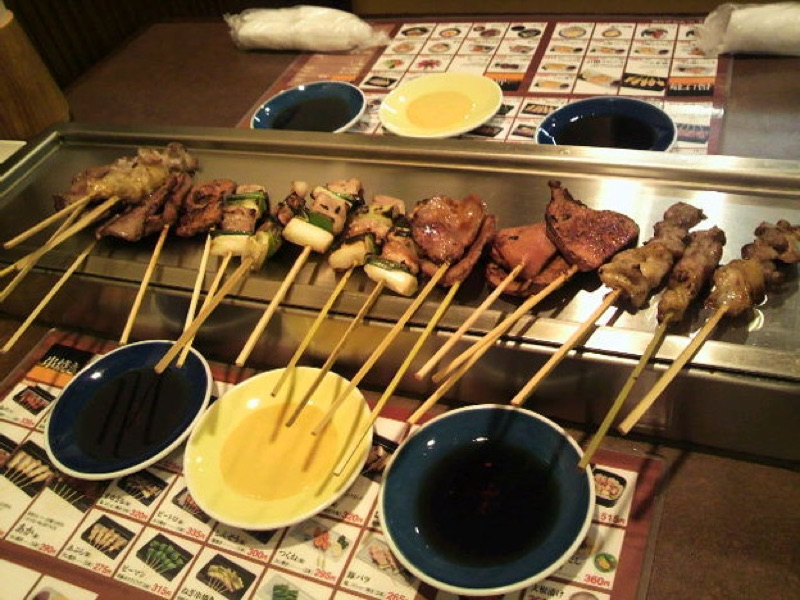
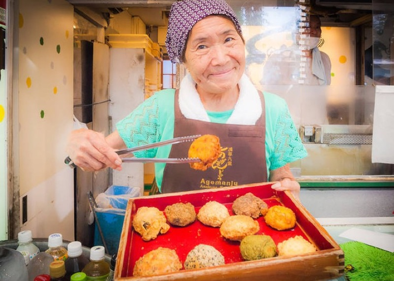
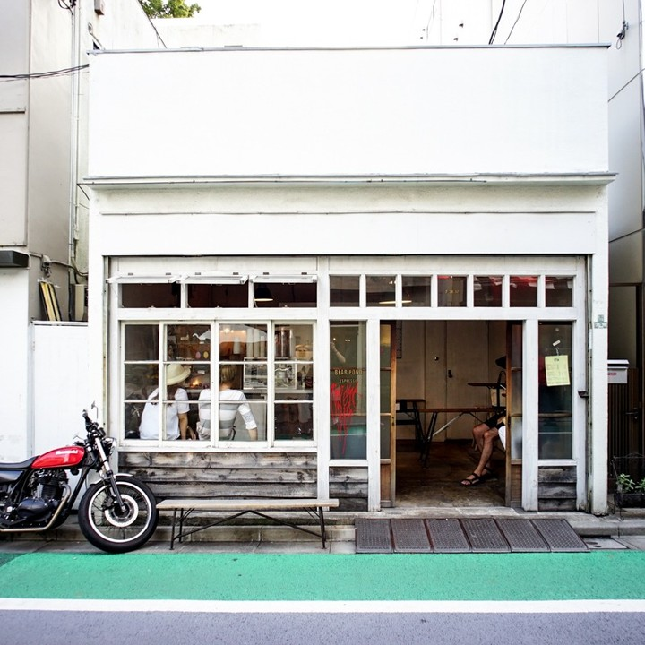
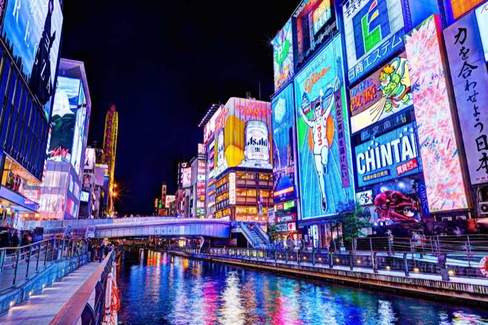

🇯🇵 Japan

20 Best Cheap Restaurants in Shinjuku (Under ¥2,000)
From ¥300 gyudon chains to hidden tonkatsu spots that tourists walk right past.

Best Ramen in Shibuya
The ramen shops Shibuya locals actually eat at — from rich tonkotsu to light shio.

Best Izakayas in Shinjuku
Golden Gai gems, Omoide Yokocho favorites, and hidden izakayas off the tourist trail.

Best Street Food in Asakusa
Nakamise-dori classics, Hoppy Street yakitori, and the snacks locals actually recommend.

Best Coffee Shops in Shimokitazawa
Specialty roasters, retro kissaten, and cozy third-wave cafés in Tokyo's coolest neighborhood.
Best Hidden Temples in Kyoto
Skip the crowds and discover mossy gardens, mountain shrines, and temples most tourists never see.

Best Street Food in Osaka
A glutton's tour of takoyaki, okonomiyaki, and kushikatsu in Japan's kitchen.

Best Udon in Nara
From an award-winning Sanuki shop that beat Kagawa in nationals to teahouses inside Nara Park with deer outside.

Best Matcha Desserts in Kyoto
Nakamura Tokichi, Tsujiri, and the matcha spots Kyoto locals actually recommend.

Best Vintage Shops in Tokyo
Shimokitazawa, Koenji, Harajuku — the thrift stores and vintage shops Reddit swears by.